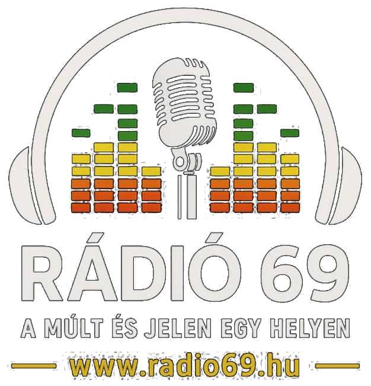

Rádió69
A múlt és a jelen egy helyen.
Ellenőrzött műsorinfók, zenei ajánlók és a Zsiványok Podcast kulisszái – forrásokkal, egy közös online magazinban.
 KIEMELT TÖRTÉNET
RÁDIÓ69 · MŰSORINFÓZsiványok Podcast a Rádió69-en: pénteki adás, vasárnapi ismétlésElolvasom ↗
KIEMELT TÖRTÉNET
RÁDIÓ69 · MŰSORINFÓZsiványok Podcast a Rádió69-en: pénteki adás, vasárnapi ismétlésElolvasom ↗
Zene, podcastok, kulisszatitkok és digitális kultúra – egy helyen.
MŰSORINFÓA Rádió69 hivatalos műsorlistájában pénteken 18:00-kor szerepel a Zsiványok Podcast, vasárnap 19:00-kor pedig az ismétlése.
Tovább olvasom ↗ TOP 40
TOP 40A Rádió69 heti műsorrendje vasárnap 12:00-ra teszi a Magyar TOP 40-et, pénteken 15:00-kor pedig ismétlésként tünteti fel.
Tovább olvasom ↗ ZENEDOBOZ
ZENEDOBOZA Rádió69 hivatalos műsorrendje hétfőn 15:00-ra teszi a ZeneDobozt, szerdán 20:00-kor pedig ismétlést jelez.
Tovább olvasom ↗ RÁDIÓ69
RÁDIÓ69A Rádió69 weboldala külön Hits és Remix felületet mutat be; a Hits leírása a nyolcvanas évektől napjainkig terjedő válogatást említi.
Tovább olvasom ↗ KULISSZÁK MÖGÖTT
KULISSZÁK MÖGÖTTA téma kiválasztásától a technikai ellenőrzésen át a vágásig több lépésből áll, mire elkészül egy Zsiványok Podcast-adás.
Tovább olvasom ↗ VENDÉGEK
VENDÉGEKA Zsiványok Podcast szerint egy beszélgetést nem csak az ismert név tesz érdekessé: a saját történet, a nyitottság és a természetes reakciók is fontosak.
Tovább olvasom ↗PODCAST TIPPEKEgy podcast elindításához nem feltétlenül kell profi stúdió: egy világos ötlet, érthető hang és rendszeres munka már jó kiindulópont lehet.
Tovább olvasom ↗UTÓMUNKAA Zsiványok Podcast saját becslése szerint egy adás elkészítése akár 6–10 óra munkát is igénybe vehet a felkészüléstől a publikálásig.
Tovább olvasom ↗Nem találtam ilyen témájú cikket. Próbálj másik keresést!
ⓘ A műsorinfókhoz és a podcastos háttéranyagokhoz forráslinket tettünk. A műsorrend változhat; az aktuális időpontokat mindig a Rádió69 hivatalos oldalán ellenőrizd. A cikkekben szereplő stúdió- és koncertfotók illusztrációk.
A Rádió69 × Zsiványok sztorikereke véletlenszerűen választ neked egy témát. Egy pörgetés, egy új sztori — nézd meg, hová vezet a szerencséd!
Készen állsz? Pörgess egyet, és fedezz fel egy új történetet!
Megnézem a témátRÁDIÓ69 × ZSIVÁNYOK · TEKERD MEG A KEREKET

Rádiós történetek, műsorokhoz kapcsolódó érdekességek és kulisszatitkok – a Rádió69 arculatával. A friss hivatalos információkat a rádió saját oldalán találod.
A MIKROFON MÖGÖTTZ.Humor, váratlan fordulatok és olyan beszélgetések, amelyekből mindig kerekedik egy jó történet. Nézz be a podcast világába!
A múlt és a jelen egy helyen.
Ez az oldal a rádióhoz és a podcasthez kapcsolódó hírek, érdekességek, ajánlók és háttértörténetek otthona. Zene, történetek és közösség – egy közös felületen.
A Rádió69 és a Zsiványok Podcast online otthonát lépésről lépésre fejlesztjük. Új tartalmakkal, hasznos funkciókkal és még több rádiós-podcastos érdekességgel dolgozunk azon, hogy egyre jobb élmény legyen nálunk böngészni.